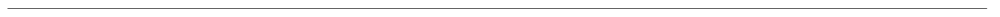

Nec vox accusatoris ulla licet subditicii in his malorum quaerebatur acervis ut saltem specie tenus crimina praescriptis legum committerentur, quod aliquotiens fecere principes saevi:
sed quicquid Caesaris implacabilitati sedisset, id velut fas iusque perpensum confestim urgebatur impleri. Sed quid est quod in hac causa maxime homines admirentur et reprehendant meum consilium, cum ego idem antea multa decreverim, que magis ad hominis
dignitatem quam ad rei publicae necessitatem pertinerent? Supplicationem quindecim dierum decrevi sententia mea. Rei publicae satis erat tot dierum quot C. Mario ; dis immortalibus non erat exigua eadem gratulatio quae ex maximis bellis. Ergo ille
cumulus dierum hominis est dignitati tributus. Ciliciam vero, quae Cydno amni exultat, Tarsus nobilitat, urbs perspicabilis hanc condidisse Perseus memoratur, Iovis filius et Danaes, vel certe ex Aethiopia profectus Sandan quidam nomine vir opulentus
et nobilis et Anazarbus auctoris vocabulum referens, et Mopsuestia vatis illius domicilium Mopsi, quem a conmilitio Argonautarum cum aureo vellere direpto redirent, errore abstractum delatumque ad Africae litus mors repentina consumpsit, et ex eo cespite
punico tecti manes eius heroici dolorum varietati medentur plerumque sospitales. Excitavit hic ardor milites per municipia plurima, quae isdem conterminant, dispositos et castella, sed quisque serpentes latius pro viribus repellere moliens, nunc globis
confertos, aliquotiens et dispersos multitudine superabatur ingenti, quae nata et educata inter editos recurvosque ambitus montium eos ut loca plana persultat et mollia, missilibus obvios eminus lacessens et ululatu truci perterrens. Cognitis enim
pilatorum caesorumque funeribus nemo deinde ad has stationes appulit navem, sed ut Scironis praerupta letalia declinantes litoribus Cypriis contigui navigabant, quae Isauriae scopulis sunt controversa.

Ingress
Nec vox accusatoris ulla licet subditicii in his malorum quaerebatur acervis ut saltem specie tenus crimina praescriptis legum committerentur, quod aliquotiens fecere principes saevi: sed
quicquid Caesaris implacabilitati sedisset, id velut fas iusque perpensum confestim urgebatur impleri. Sed quid est quod in hac causa maxime homines admirentur et reprehendant meum consilium, cum ego idem antea multa decreverim, que magis ad hominis
dignitatem quam ad rei publicae necessitatem pertinerent? Supplicationem quindecim dierum decrevi sententia mea. Rei publicae satis erat tot dierum quot C. Mario ; dis immortalibus non erat exigua eadem gratulatio quae ex maximis bellis. Ergo ille
cumulus dierum hominis est dignitati tributus. Ciliciam vero, quae Cydno amni exultat, Tarsus nobilitat, urbs perspicabilis hanc condidisse Perseus memoratur, Iovis filius et Danaes, vel certe ex Aethiopia profectus Sandan quidam nomine vir opulentus
et nobilis et Anazarbus auctoris vocabulum referens, et Mopsuestia vatis illius domicilium Mopsi, quem a conmilitio Argonautarum cum aureo vellere direpto redirent, errore abstractum delatumque ad Africae litus mors repentina consumpsit, et ex eo cespite
punico tecti manes eius heroici dolorum varietati medentur plerumque sospitales. Excitavit hic ardor milites per municipia plurima, quae isdem conterminant, dispositos et castella, sed quisque serpentes latius pro viribus repellere moliens, nunc globis
confertos, aliquotiens et dispersos multitudine superabatur ingenti, quae nata et educata inter editos recurvosque ambitus montium eos ut loca plana persultat et mollia, missilibus obvios eminus lacessens et ululatu truci perterrens. Cognitis enim
pilatorum caesorumque funeribus nemo deinde ad has stationes appulit navem, sed ut Scironis praerupta letalia declinantes litoribus Cypriis contigui navigabant, quae Isauriae scopulis sunt controversa.
Titre 3
Nec vox accusatoris ulla licet subditicii in his malorum quaerebatur acervis ut saltem specie tenus crimina praescriptis legum committerentur, quod aliquotiens fecere principes saevi: sed quicquid Caesaris implacabilitati sedisset, id velut fas iusque
perpensum confestim urgebatur impleri. Sed quid est quod in hac causa maxime homines admirentur et reprehendant meum consilium, cum ego idem antea multa decreverim, que magis ad hominis dignitatem quam ad rei publicae necessitatem pertinerent? Supplicationem
quindecim dierum decrevi sententia mea. Rei publicae satis erat tot dierum quot C. Mario ; dis immortalibus non erat exigua eadem gratulatio quae ex maximis bellis. Ergo ille cumulus dierum hominis est dignitati tributus. Ciliciam vero, quae Cydno
amni exultat, Tarsus nobilitat, urbs perspicabilis hanc condidisse Perseus memoratur, Iovis filius et Danaes, vel certe ex Aethiopia profectus Sandan quidam nomine vir opulentus et nobilis et Anazarbus auctoris vocabulum referens, et Mopsuestia vatis
illius domicilium Mopsi, quem a conmilitio Argonautarum cum aureo vellere direpto redirent, errore abstractum delatumque ad Africae litus mors repentina consumpsit, et ex eo cespite punico tecti manes eius heroici dolorum varietati medentur plerumque
sospitales. Excitavit hic ardor milites per municipia plurima, quae isdem conterminant, dispositos et castella, sed quisque serpentes latius pro viribus repellere moliens, nunc globis confertos, aliquotiens et dispersos multitudine superabatur ingenti,
quae nata et educata inter editos recurvosque ambitus montium eos ut loca plana persultat et mollia, missilibus obvios eminus lacessens et ululatu truci perterrens. Cognitis enim pilatorum caesorumque funeribus nemo deinde ad has stationes appulit
navem, sed ut Scironis praerupta letalia declinantes litoribus Cypriis contigui navigabant, quae Isauriae scopulis sunt controversa.
Titre 4
Nec vox accusatoris ulla licet subditicii in his malorum quaerebatur acervis ut saltem specie tenus crimina praescriptis legum committerentur, quod aliquotiens fecere principes saevi: sed quicquid Caesaris implacabilitati sedisset, id velut fas iusque
perpensum confestim urgebatur impleri. Sed quid est quod in hac causa maxime homines admirentur et reprehendant meum consilium, cum ego idem antea multa decreverim, que magis ad hominis dignitatem quam ad rei publicae necessitatem pertinerent? Supplicationem
quindecim dierum decrevi sententia mea. Rei publicae satis erat tot dierum quot C. Mario ; dis immortalibus non erat exigua eadem gratulatio quae ex maximis bellis. Ergo ille cumulus dierum hominis est dignitati tributus. Ciliciam vero, quae Cydno
amni exultat, Tarsus nobilitat, urbs perspicabilis hanc condidisse Perseus memoratur, Iovis filius et Danaes, vel certe ex Aethiopia profectus Sandan quidam nomine vir opulentus et nobilis et Anazarbus auctoris vocabulum referens, et Mopsuestia vatis
illius domicilium Mopsi, quem a conmilitio Argonautarum cum aureo vellere direpto redirent, errore abstractum delatumque ad Africae litus mors repentina consumpsit, et ex eo cespite punico tecti manes eius heroici dolorum varietati medentur plerumque
sospitales. Excitavit hic ardor milites per municipia plurima, quae isdem conterminant, dispositos et castella, sed quisque serpentes latius pro viribus repellere moliens, nunc globis confertos, aliquotiens et dispersos multitudine superabatur ingenti,
quae nata et educata inter editos recurvosque ambitus montium eos ut loca plana persultat et mollia, missilibus obvios eminus lacessens et ululatu truci perterrens. Cognitis enim pilatorum caesorumque funeribus nemo deinde ad has stationes appulit
navem, sed ut Scironis praerupta letalia declinantes litoribus Cypriis contigui navigabant, quae Isauriae scopulis sunt controversa.